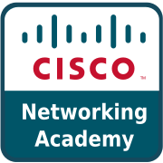

시스코 Cisco
시스코 시스템즈(Cisco Systems)는 라우터·스위치 등 네트워킹 장비와 사이버보안·협업 솔루션을 개발하는 미국의 IT 기업이다.
최종 업데이트
시스코는 어떤 브랜드인가
시스코 시스템즈는 1984년 12월 스탠퍼드대 부부 연구자 레너드 보색과 샌디 러너가 캠퍼스 내 이질적 네트워크를 연결하는 라우터 기술을 상용화하며 설립한 미국 네트워크 장비 기업이다. 회사명은 본거지 샌프란시스코(San Francisco)에서 따왔다.
1990년 기업공개와 1990~2000년대 공격적 인수를 거쳐 인터넷 인프라의 표준 공급자로 성장했고, 현재 직원 약 8만 6천여 명, 연매출 약 567억 달러 규모로 라우터·스위치 시장의 오랜 지배자다.
시스코는 어떻게 봐야 할까
시스코의 차별점은 단일 제품이 아니라 라우팅·스위칭·무선·보안·협업을 하나로 묶는 통합 포트폴리오와 인증(CCNA·CCIE) 생태계에 있다. 후발 경쟁 구도는 분명하다.
이더넷 스위치에서 화웨이와 아리스타가, 통신사 라우터에서 화웨이가 점유율을 빠르게 잠식하며 시스코의 2024년 스위치 점유율은 전년 대비 큰 폭으로 하락했다. 이에 시스코는 2024년 3월 약 280억 달러를 들여 데이터 분석·보안 기업 스플렁크를 사상 최대 규모로 인수, 하드웨어 의존도를 낮추고 AI 시대의 보안·관측성(observability) 소프트웨어로 무게중심을 옮기고 있다.
이는 장비 판매에서 구독형 매출로의 전환을 가속한다는 신호다. 한국 시장에서도 통신사 백본, 대기업 데이터센터, 공공·금융 보안망에서 시스코 장비가 폭넓게 쓰여, 차세대 방화벽과 협업 솔루션 웹엑스(Webex)를 둘러싼 국내 경쟁이 이어지고 있다.
시스코는 어떻게 시작되고 성장했나
출발점은 1980년대 초 스탠퍼드대 전산실이었다. 컴퓨터 시설을 관리하던 부부 레너드 보색과 샌디 러너는 서로 다른 학과의 근거리망(LAN)을 잇기 위해 여러 프로토콜을 동시에 처리하는 라우터를 직접 만들었고, 이를 사업화해 1984년 12월 10일 시스코 시스템즈를 세웠다.
1985년 디지털 이큅먼트(DEC) 컴퓨터용 네트워크 인터페이스 카드를 첫 제품으로 판매했고, 이듬해 다중 프로토콜 라우터로 첫 대형 성공을 거뒀다. 첫 번째 전환점은 1990년 기업공개로, 주당 18달러에 상장한 주식은 수요 폭증으로 빠르게 치솟았다.
그러나 같은 해 벤처투자자들이 영입한 전문 경영진과 갈등 끝에 러너가 해임되고 보색도 회사를 떠났으며, 두 창업자는 약 1억 7천만 달러를 들고 물러났다. 두 번째 전환점은 1990년대 인터넷 폭발기로, 잇단 인수와 통신사·기업 백본 장악을 통해 국제적 확장을 이루며 인터넷의 핵심 인프라 공급자로 자리 잡았다.
시스코의 브랜드 아이덴티티는 무엇인가
시스코의 가치관은 '모든 것을 연결한다'는 명제 위에 안정성과 보안, 상호운용성을 둔다. 시각 정체성은 샌프란시스코 금문교를 추상화한 세로 막대 형태의 로고로, 청록과 짙은 파랑 계열을 기조로 신뢰감 있는 기술 이미지를 전한다.
타깃은 일반 소비자가 아니라 통신사, 대기업 전산실, 데이터센터, 공공·금융기관 등 대규모 조직이며, 브랜드 보이스는 엔지니어와 의사결정권자를 동시에 향한 전문적이고 절제된 어조를 유지한다. CCNA·CCIE로 대표되는 자격 인증 체계는 기술 인력을 브랜드 충성층으로 묶는 핵심 자산이다.
시스코의 대표 제품과 서비스는 무엇인가
제품군은 엔터프라이즈·서비스 프로바이더용 라우터, 카탈리스트·네서스 계열 스위치, 무선 액세스, 방화벽과 보안 솔루션(Duo·Umbrella·차세대 방화벽), 협업 도구 웹엑스(Webex)로 구성된다. 시그니처는 네트워크의 대명사가 된 라우터·스위치 라인과 영상회의 웹엑스다.
가격대는 소형 장비부터 통신사급 코어 장비까지 폭이 넓고 견적 기반 판매가 일반적이다. 유통은 직판보다 인증 파트너와 채널 리셀러를 통한 B2B 방식이 중심이며, 최근에는 구독형 소프트웨어·보안 서비스 비중이 커지고 있다.
시스코는 지금 어떤 상태인가
본사는 미국 캘리포니아주 산호세(San Jose)에 있다. 회장 겸 최고경영자는 2015년 7월 취임한 척 로빈스(Chuck Robbins)로, 2017년 12월 이사회 의장에 올랐다.
직원 수는 2025 회계연도 기준 약 8만 6천여 명이며, 연매출은 약 567억 달러로 전년 대비 증가했다. 2024년 3월 약 280억 달러 규모의 스플렁크 인수를 완료했다.
시스코 연혁 — 주요 사건은 언제였나
시스코 로고는 어떻게 변해왔나
 BI/CI 아카이브 2보관 이미지 2
BI/CI 아카이브 2보관 이미지 2
BI/CI 아카이브 3보관 이미지 3 BI/CI 아카이브 4보관 이미지 4
BI/CI 아카이브 4보관 이미지 4자주 묻는 질문
시스코는 어느 나라 브랜드인가요?
시스코는 미국의 기술·전자 브랜드입니다.
시스코는 언제 설립되었나요?
시스코는 1984년 설립되었습니다.
시스코의 브랜드 아이덴티티는 무엇인가요?
시스코의 가치관은 '모든 것을 연결한다'는 명제 위에 안정성과 보안, 상호운용성을 둔다.
시스코의 대표 제품은 무엇인가요?
제품군은 엔터프라이즈·서비스 프로바이더용 라우터, 카탈리스트·네서스 계열 스위치, 무선 액세스, 방화벽과 보안 솔루션(Duo·Umbrella·차세대 방화벽), 협업 도구 웹엑스(Webex)로 구성된다.
시스코의 본사는 어디에 있나요?
본사는 미국 캘리포니아주 산호세(San Jose)에 있다.
시스코의 창업자는 누구인가요?
시스코의 창업자는 Leonard Bosack, Sandra Lerner입니다(위키데이터 기준).
시스코의 공식 웹사이트는 어디인가요?
시스코의 공식 웹사이트는 https://www.cisco.com/ 입니다.
출처와 검증
시스코 관련 참고: 공식 웹사이트 · 위키데이터 Q173395 · 한국어 위키백과 · 영어 위키백과. 브랜드명은 한글과 원어를 함께 표기하되 데이터에 없는 표기는 만들지 않습니다. 기원 국가·설립연도는 검수된 정의문에서 확인된 값을 우선하고, 없을 때만 공식 웹사이트 URL이 일치하는 위키데이터 개체의 값을 씁니다. 위키데이터 값은 2026-09-07 기준입니다.